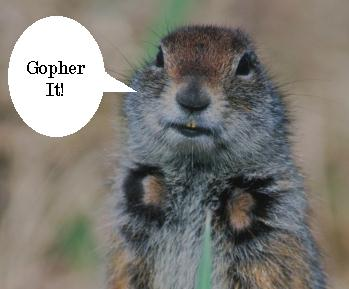
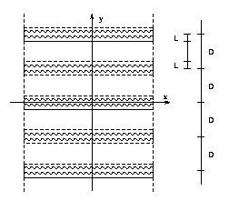

A gopher lives in the flatlands of Northern Saskatchewan and travels frequently to see his cousins. After years and years of drought, there was a period of unusually heavy rains which resulted in all the ditches on the way of the gopher's travel being flooded with water. The ditches run in the West-East direction and each ditch is of a constant width. The gopher still wants to make his travels but being not a very good swimmer, he wants to minimize the distance that he has to swim through the ditches and with this requirement satisfied, he also wants to walk as little as possible on the dry land. Your task is to find the length of the gopher's route which minimizes his swimming and then his walking.
We are given a system of orthogonal coordinates, where the x axis is directed from West to East and the y axis is directed from South to North. Given are real numbers: D and L, 0 < L, L+L < D, such that a point (x, y) is on dry land if and only if there exists an integer n such that
n*D+L <= y <= (n+1)*D-L.
Given is the starting point of the gopher (xs, ys) and its target point (xt, yt). Both these points are on dry land.
Each line of input contains six real numbers: D, L, xs, ys, xt, yt. For each line of input, output one line with the needed information in the format shown in the sample output.
100.0 10.0 0.0 50.0 100.0 50.0
100.0 10.0 0.0 50.0 100.0 150.0
100.0 10.0 0.0 -50.0 100.0 50.0
100.0 10.0 0.0 -50.0 100.0 150.0
The gopher has to swim 0.00 meters and walk 100.00 meters.
The gopher has to swim 20.00 meters and walk 128.06 meters.
The gopher has to swim 20.00 meters and walk 128.06 meters.
The gopher has to swim 40.00 meters and walk 188.68 meters.
Piotr Rudnicki